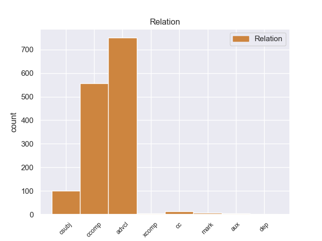
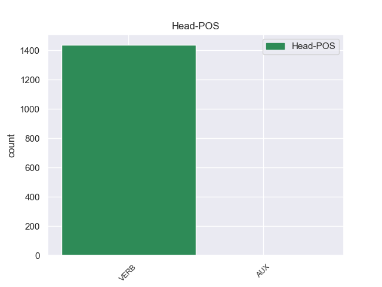
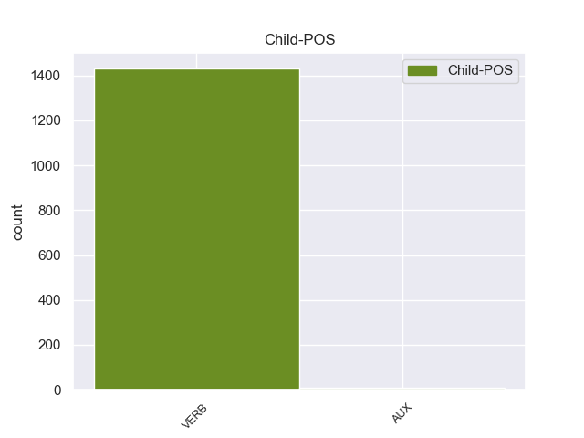

Distribution of features within this leaf



Agreement Rules sorted by frequency.
- When the dependent token is the adverbial clause modifier(advcl) of the head token,
1 Para _ _ _ _ 0 _ _ _
2 poder _ _ _ _ 0 _ _ _
3 estudiar _ _ _ _ 0 _ _ _
4 los _ _ _ _ 0 _ _ _
5 mejor _ _ _ _ 0 _ _ _
6 , _ _ _ _ 0 _ _ _
7 Ghazali _ _ _ _ 0 _ _ _
8 introdujo introducir VERB _ Mood=Ind|Number=Sing|Person=3|Tense=Past|VerbForm=Fin 0 _ _ _
9 varios _ _ _ _ 0 _ _ _
10 peces _ _ _ _ 0 _ _ _
11 en _ _ _ _ 0 _ _ _
12 un _ _ _ _ 0 _ _ _
13 tanque _ _ _ _ 0 _ _ _
14 y _ _ _ _ 0 _ _ _
15 , _ _ _ _ 0 _ _ _
16 tras _ _ _ _ 0 _ _ _
17 varias _ _ _ _ 0 _ _ _
18 semanas _ _ _ _ 0 _ _ _
19 de _ _ _ _ 0 _ _ _
20 aclimatación _ _ _ _ 0 _ _ _
21 , _ _ _ _ 0 _ _ _
22 comenzó _ _ _ _ 0 _ _ _
23 a _ _ _ _ 0 _ _ _
24 grabar _ _ _ _ 0 _ _ _
25 sus _ _ _ _ 0 _ _ _
26 sonidos _ _ _ _ 0 _ _ _
27 , _ _ _ _ 0 _ _ _
28 según _ _ _ _ 0 _ _ _
29 recoge recoger VERB _ Mood=Ind|Number=Sing|Person=3|Tense=Pres|VerbForm=Fin 8 advcl _ _
30 el _ _ _ _ 0 _ _ _
31 periódico _ _ _ _ 0 _ _ _
32 New _ _ _ _ 0 _ _ _
33 Zealand _ _ _ _ 0 _ _ _
34 Herald _ _ _ _ 0 _ _ _
35 . _ _ _ _ 0 _ _ _
1 " _ _ _ _ 0 _ _ _
2 Tenemos tener VERB _ Mood=Ind|Number=Plur|Person=1|Tense=Pres|VerbForm=Fin 79 ccomp _ _
3 todo _ _ _ _ 0 _ _ _
4 listo _ _ _ _ 0 _ _ _
5 , _ _ _ _ 0 _ _ _
6 la _ _ _ _ 0 _ _ _
7 venta _ _ _ _ 0 _ _ _
8 de _ _ _ _ 0 _ _ _
9 boletos _ _ _ _ 0 _ _ _
10 será _ _ _ _ 0 _ _ _
11 a _ _ _ _ 0 _ _ _
12 partir _ _ _ _ 0 _ _ _
13 de _ _ _ _ 0 _ _ _
14 mañana _ _ _ _ 0 _ _ _
15 de _ _ _ _ 0 _ _ _
16 8 _ _ _ _ 0 _ _ _
17 am _ _ _ _ 0 _ _ _
18 a _ _ _ _ 0 _ _ _
19 3 _ _ _ _ 0 _ _ _
20 pm _ _ _ _ 0 _ _ _
21 , _ _ _ _ 0 _ _ _
22 la _ _ _ _ 0 _ _ _
23 afición _ _ _ _ 0 _ _ _
24 de _ _ _ _ 0 _ _ _
25 el _ _ _ _ 0 _ _ _
26 Real _ _ _ _ 0 _ _ _
27 España _ _ _ _ 0 _ _ _
28 podrá _ _ _ _ 0 _ _ _
29 comprar _ _ _ _ 0 _ _ _
30 en _ _ _ _ 0 _ _ _
31 el _ _ _ _ 0 _ _ _
32 Banco _ _ _ _ 0 _ _ _
33 Continental _ _ _ _ 0 _ _ _
34 , _ _ _ _ 0 _ _ _
35 frente _ _ _ _ 0 _ _ _
36 a _ _ _ _ 0 _ _ _
37 el _ _ _ _ 0 _ _ _
38 estadio _ _ _ _ 0 _ _ _
39 Morazán _ _ _ _ 0 _ _ _
40 , _ _ _ _ 0 _ _ _
41 se _ _ _ _ 0 _ _ _
42 han _ _ _ _ 0 _ _ _
43 puesto _ _ _ _ 0 _ _ _
44 a _ _ _ _ 0 _ _ _
45 la _ _ _ _ 0 _ _ _
46 venta _ _ _ _ 0 _ _ _
47 800 _ _ _ _ 0 _ _ _
48 boletos _ _ _ _ 0 _ _ _
49 , _ _ _ _ 0 _ _ _
50 500 _ _ _ _ 0 _ _ _
51 en _ _ _ _ 0 _ _ _
52 sol _ _ _ _ 0 _ _ _
53 y _ _ _ _ 0 _ _ _
54 300 _ _ _ _ 0 _ _ _
55 en _ _ _ _ 0 _ _ _
56 preferencia _ _ _ _ 0 _ _ _
57 , _ _ _ _ 0 _ _ _
58 la _ _ _ _ 0 _ _ _
59 boletería _ _ _ _ 0 _ _ _
60 de _ _ _ _ 0 _ _ _
61 el _ _ _ _ 0 _ _ _
62 España _ _ _ _ 0 _ _ _
63 está _ _ _ _ 0 _ _ _
64 ya _ _ _ _ 0 _ _ _
65 identificada _ _ _ _ 0 _ _ _
66 con _ _ _ _ 0 _ _ _
67 el _ _ _ _ 0 _ _ _
68 escudo _ _ _ _ 0 _ _ _
69 de _ _ _ _ 0 _ _ _
70 el _ _ _ _ 0 _ _ _
71 equipo _ _ _ _ 0 _ _ _
72 y _ _ _ _ 0 _ _ _
73 con _ _ _ _ 0 _ _ _
74 el _ _ _ _ 0 _ _ _
75 color _ _ _ _ 0 _ _ _
76 amarillo _ _ _ _ 0 _ _ _
77 " _ _ _ _ 0 _ _ _
78 , _ _ _ _ 0 _ _ _
79 comentó comentar VERB _ Mood=Ind|Number=Sing|Person=3|Tense=Past|VerbForm=Fin 0 _ _ _
80 Rolin _ _ _ _ 0 _ _ _
81 . _ _ _ _ 0 _ _ _
1 Hace hacer VERB _ Mood=Ind|Number=Sing|Person=3|Tense=Pres|VerbForm=Fin 0 _ _ _
2 aproximadamente _ _ _ _ 0 _ _ _
3 un _ _ _ _ 0 _ _ _
4 año _ _ _ _ 0 _ _ _
5 que _ _ _ _ 0 _ _ _
6 Niscayah _ _ _ _ 0 _ _ _
7 decidió decidir VERB _ Mood=Ind|Number=Sing|Person=3|Tense=Past|VerbForm=Fin 1 csubj _ _
8 realizar _ _ _ _ 0 _ _ _
9 un _ _ _ _ 0 _ _ _
10 cambio _ _ _ _ 0 _ _ _
11 estratégico _ _ _ _ 0 _ _ _
12 para _ _ _ _ 0 _ _ _
13 convertir _ _ _ _ 0 _ _ _
14 a _ _ _ _ 0 _ _ _
15 el _ _ _ _ 0 _ _ _
16 cliente _ _ _ _ 0 _ _ _
17 en _ _ _ _ 0 _ _ _
18 su _ _ _ _ 0 _ _ _
19 núcleo _ _ _ _ 0 _ _ _
20 y _ _ _ _ 0 _ _ _
21 , _ _ _ _ 0 _ _ _
22 consecuencia _ _ _ _ 0 _ _ _
23 de _ _ _ _ 0 _ _ _
24 éste _ _ _ _ 0 _ _ _
25 , _ _ _ _ 0 _ _ _
26 un _ _ _ _ 0 _ _ _
27 cambio _ _ _ _ 0 _ _ _
28 de _ _ _ _ 0 _ _ _
29 estructura _ _ _ _ 0 _ _ _
30 , _ _ _ _ 0 _ _ _
31 pasando _ _ _ _ 0 _ _ _
32 de _ _ _ _ 0 _ _ _
33 una _ _ _ _ 0 _ _ _
34 división _ _ _ _ 0 _ _ _
35 funcional _ _ _ _ 0 _ _ _
36 a _ _ _ _ 0 _ _ _
37 una _ _ _ _ 0 _ _ _
38 matricial _ _ _ _ 0 _ _ _
39 . _ _ _ _ 0 _ _ _
1 El _ _ _ _ 0 _ _ _
2 entrenador _ _ _ _ 0 _ _ _
3 serbio _ _ _ _ 0 _ _ _
4 confía _ _ _ _ 0 _ _ _
5 en _ _ _ _ 0 _ _ _
6 el _ _ _ _ 0 _ _ _
7 jerezano _ _ _ _ 0 _ _ _
8 , _ _ _ _ 0 _ _ _
9 que _ _ _ _ 0 _ _ _
10 se _ _ _ _ 0 _ _ _
11 convierte _ _ _ _ 0 _ _ _
12 en _ _ _ _ 0 _ _ _
13 parte _ _ _ _ 0 _ _ _
14 fundamental _ _ _ _ 0 _ _ _
15 de _ _ _ _ 0 _ _ _
16 el _ _ _ _ 0 _ _ _
17 equipo _ _ _ _ 0 _ _ _
18 que _ _ _ _ 0 _ _ _
19 consigue _ _ _ _ 0 _ _ _
20 " _ _ _ _ 0 _ _ _
21 El _ _ _ _ 0 _ _ _
22 Doblete _ _ _ _ 0 _ _ _
23 " _ _ _ _ 0 _ _ _
24 , _ _ _ _ 0 _ _ _
25 es ser VERB _ Mood=Ind|Number=Sing|Person=3|Tense=Pres|VerbForm=Fin 29 cc _ _
26 decir _ _ _ _ 0 _ _ _
27 , _ _ _ _ 0 _ _ _
28 que _ _ _ _ 0 _ _ _
29 gana ganar VERB _ Mood=Ind|Number=Sing|Person=3|Tense=Pres|VerbForm=Fin 0 _ _ _
30 la _ _ _ _ 0 _ _ _
31 Liga _ _ _ _ 0 _ _ _
32 y _ _ _ _ 0 _ _ _
33 la _ _ _ _ 0 _ _ _
34 Copa _ _ _ _ 0 _ _ _
35 de _ _ _ _ 0 _ _ _
36 el _ _ _ _ 0 _ _ _
37 Rey _ _ _ _ 0 _ _ _
38 de _ _ _ _ 0 _ _ _
39 Fútbol _ _ _ _ 0 _ _ _
40 en _ _ _ _ 0 _ _ _
41 esa _ _ _ _ 0 _ _ _
42 misma _ _ _ _ 0 _ _ _
43 campaña _ _ _ _ 0 _ _ _
44 . _ _ _ _ 0 _ _ _
1 Pese pese VERB _ Mood=Ind|Number=Sing|Person=3|Tense=Pres|VerbForm=Fin 7 mark _ _
2 a _ _ _ _ 0 _ _ _
3 que _ _ _ _ 0 _ _ _
4 los _ _ _ _ 0 _ _ _
5 médicos _ _ _ _ 0 _ _ _
6 inicialmente _ _ _ _ 0 _ _ _
7 predijeron predecir VERB _ Mood=Ind|Number=Plur|Person=3|Tense=Past|VerbForm=Fin 0 _ _ _
8 que _ _ _ _ 0 _ _ _
9 se _ _ _ _ 0 _ _ _
10 recuperaría _ _ _ _ 0 _ _ _
11 en _ _ _ _ 0 _ _ _
12 seis _ _ _ _ 0 _ _ _
13 semanas _ _ _ _ 0 _ _ _
14 , _ _ _ _ 0 _ _ _
15 luego _ _ _ _ 0 _ _ _
16 de _ _ _ _ 0 _ _ _
17 dos _ _ _ _ 0 _ _ _
18 meses _ _ _ _ 0 _ _ _
19 le _ _ _ _ 0 _ _ _
20 dijeron _ _ _ _ 0 _ _ _
21 que _ _ _ _ 0 _ _ _
22 transcurriría _ _ _ _ 0 _ _ _
23 un _ _ _ _ 0 _ _ _
24 año _ _ _ _ 0 _ _ _
25 o _ _ _ _ 0 _ _ _
26 más _ _ _ _ 0 _ _ _
27 antes _ _ _ _ 0 _ _ _
28 de _ _ _ _ 0 _ _ _
29 que _ _ _ _ 0 _ _ _
30 se _ _ _ _ 0 _ _ _
31 sintiera _ _ _ _ 0 _ _ _
32 mejor _ _ _ _ 0 _ _ _
33 . _ _ _ _ 0 _ _ _
1 Sam _ _ _ _ 0 _ _ _
2 les _ _ _ _ 0 _ _ _
3 dice _ _ _ _ 0 _ _ _
4 , _ _ _ _ 0 _ _ _
5 de _ _ _ _ 0 _ _ _
6 broma _ _ _ _ 0 _ _ _
7 , _ _ _ _ 0 _ _ _
8 que _ _ _ _ 0 _ _ _
9 Carly _ _ _ _ 0 _ _ _
10 y _ _ _ _ 0 _ _ _
11 Freddie _ _ _ _ 0 _ _ _
12 se _ _ _ _ 0 _ _ _
13 aman _ _ _ _ 0 _ _ _
14 , _ _ _ _ 0 _ _ _
15 provocando _ _ _ _ 0 _ _ _
16 que _ _ _ _ 0 _ _ _
17 los _ _ _ _ 0 _ _ _
18 fans _ _ _ _ 0 _ _ _
19 de _ _ _ _ 0 _ _ _
20 iCarly _ _ _ _ 0 _ _ _
21 inicien _ _ _ _ 0 _ _ _
22 una _ _ _ _ 0 _ _ _
23 descontrolada _ _ _ _ 0 _ _ _
24 guerra _ _ _ _ 0 _ _ _
25 de _ _ _ _ 0 _ _ _
26 fans _ _ _ _ 0 _ _ _
27 donde _ _ _ _ 0 _ _ _
28 discuten discutar VERB _ Mood=Ind|Number=Plur|Person=3|Tense=Pres|VerbForm=Fin 0 _ _ _
29 qué _ _ _ _ 0 _ _ _
30 relación _ _ _ _ 0 _ _ _
31 amorosa _ _ _ _ 0 _ _ _
32 existe existir VERB _ Mood=Ind|Number=Sing|Person=3|Tense=Pres|VerbForm=Fin 28 xcomp _ _
33 entre _ _ _ _ 0 _ _ _
34 los _ _ _ _ 0 _ _ _
35 chicos _ _ _ _ 0 _ _ _
36 : _ _ _ _ 0 _ _ _
37 si _ _ _ _ 0 _ _ _
38 Carly _ _ _ _ 0 _ _ _
39 y _ _ _ _ 0 _ _ _
40 Freddie _ _ _ _ 0 _ _ _
41 ( _ _ _ _ 0 _ _ _
42 Creddie _ _ _ _ 0 _ _ _
43 ) _ _ _ _ 0 _ _ _
44 o _ _ _ _ 0 _ _ _
45 Sam _ _ _ _ 0 _ _ _
46 y _ _ _ _ 0 _ _ _
47 Freddie _ _ _ _ 0 _ _ _
48 ( _ _ _ _ 0 _ _ _
49 Seddie _ _ _ _ 0 _ _ _
50 ) _ _ _ _ 0 _ _ _
51 tienen _ _ _ _ 0 _ _ _
52 una _ _ _ _ 0 _ _ _
53 relación _ _ _ _ 0 _ _ _
54 romántica _ _ _ _ 0 _ _ _
55 entre _ _ _ _ 0 _ _ _
56 sí _ _ _ _ 0 _ _ _
57 , _ _ _ _ 0 _ _ _
58 lo _ _ _ _ 0 _ _ _
59 cual _ _ _ _ 0 _ _ _
60 los _ _ _ _ 0 _ _ _
61 sorprende _ _ _ _ 0 _ _ _
62 mucho _ _ _ _ 0 _ _ _
63 y _ _ _ _ 0 _ _ _
64 afecta _ _ _ _ 0 _ _ _
65 las _ _ _ _ 0 _ _ _
66 oportunidades _ _ _ _ 0 _ _ _
67 de _ _ _ _ 0 _ _ _
68 Carly _ _ _ _ 0 _ _ _
69 de _ _ _ _ 0 _ _ _
70 salir _ _ _ _ 0 _ _ _
71 con _ _ _ _ 0 _ _ _
72 Adam _ _ _ _ 0 _ _ _
73 . _ _ _ _ 0 _ _ _
1 El _ _ _ _ 0 _ _ _
2 Doctor _ _ _ _ 0 _ _ _
3 Boskonovitch _ _ _ _ 0 _ _ _
4 y _ _ _ _ 0 _ _ _
5 Yoshimitsu _ _ _ _ 0 _ _ _
6 están estar VERB _ Mood=Ind|Number=Plur|Person=3|Tense=Pres|VerbForm=Fin 0 _ _ _
7 en _ _ _ _ 0 _ _ _
8 los _ _ _ _ 0 _ _ _
9 laboratorios _ _ _ _ 0 _ _ _
10 de _ _ _ _ 0 _ _ _
11 el _ _ _ _ 0 _ _ _
12 primero _ _ _ _ 0 _ _ _
13 , _ _ _ _ 0 _ _ _
14 observan _ _ _ _ 0 _ _ _
15 a _ _ _ _ 0 _ _ _
16 un _ _ _ _ 0 _ _ _
17 ratón _ _ _ _ 0 _ _ _
18 que _ _ _ _ 0 _ _ _
19 está _ _ _ _ 0 _ _ _
20 bebiendo _ _ _ _ 0 _ _ _
21 la _ _ _ _ 0 _ _ _
22 sangre _ _ _ _ 0 _ _ _
23 de _ _ _ _ 0 _ _ _
24 Ogre _ _ _ _ 0 _ _ _
25 , _ _ _ _ 0 _ _ _
26 de _ _ _ _ 0 _ _ _
27 repente _ _ _ _ 0 _ _ _
28 los _ _ _ _ 0 _ _ _
29 dos _ _ _ _ 0 _ _ _
30 salen salir AUX _ Mood=Ind|Number=Plur|Person=3|Tense=Pres|VerbForm=Fin 6 aux _ _
31 corriendo _ _ _ _ 0 _ _ _
32 , _ _ _ _ 0 _ _ _
33 cuando _ _ _ _ 0 _ _ _
34 el _ _ _ _ 0 _ _ _
35 ratón _ _ _ _ 0 _ _ _
36 se _ _ _ _ 0 _ _ _
37 vuelve _ _ _ _ 0 _ _ _
38 gigante _ _ _ _ 0 _ _ _
39 y _ _ _ _ 0 _ _ _
40 destruye _ _ _ _ 0 _ _ _
41 el _ _ _ _ 0 _ _ _
42 laboratorio _ _ _ _ 0 _ _ _
43 . _ _ _ _ 0 _ _ _
1 Es _ _ _ _ 0 _ _ _
2 probablemente _ _ _ _ 0 _ _ _
3 cazada _ _ _ _ 0 _ _ _
4 donde _ _ _ _ 0 _ _ _
5 sea ser AUX _ Mood=Sub|Number=Sing|Person=3|Tense=Pres|VerbForm=Fin 6 dep _ _
6 haya haber VERB _ Mood=Sub|Number=Sing|Person=3|Tense=Pres|VerbForm=Fin 0 _ _ _
7 humanos _ _ _ _ 0 _ _ _
8 . _ _ _ _ 0 _ _ _
Disagree Examples:
1 Además _ _ _ _ 0 _ _ _
2 se _ _ _ _ 0 _ _ _
3 le _ _ _ _ 0 _ _ _
4 pediría pedir VERB _ Mood=Cnd|Number=Sing|Person=3|VerbForm=Fin 0 _ _ _
5 a _ _ _ _ 0 _ _ _
6 las _ _ _ _ 0 _ _ _
7 empresas _ _ _ _ 0 _ _ _
8 interesadas _ _ _ _ 0 _ _ _
9 en _ _ _ _ 0 _ _ _
10 prestar _ _ _ _ 0 _ _ _
11 el _ _ _ _ 0 _ _ _
12 servicio _ _ _ _ 0 _ _ _
13 que _ _ _ _ 0 _ _ _
14 se _ _ _ _ 0 _ _ _
15 hagan hacer VERB _ Mood=Sub|Number=Plur|Person=3|Tense=Pres|VerbForm=Fin 4 csubj _ _
16 cargo _ _ _ _ 0 _ _ _
17 de _ _ _ _ 0 _ _ _
18 la _ _ _ _ 0 _ _ _
19 señalización _ _ _ _ 0 _ _ _
20 y _ _ _ _ 0 _ _ _
21 la _ _ _ _ 0 _ _ _
22 cartelería _ _ _ _ 0 _ _ _
23 que _ _ _ _ 0 _ _ _
24 contiene _ _ _ _ 0 _ _ _
25 información _ _ _ _ 0 _ _ _
26 para _ _ _ _ 0 _ _ _
27 los _ _ _ _ 0 _ _ _
28 usuarios _ _ _ _ 0 _ _ _
29 . _ _ _ _ 0 _ _ _
1 De _ _ _ _ 0 _ _ _
2 muy _ _ _ _ 0 _ _ _
3 bajo _ _ _ _ 0 _ _ _
4 costo _ _ _ _ 0 _ _ _
5 y _ _ _ _ 0 _ _ _
6 con _ _ _ _ 0 _ _ _
7 software _ _ _ _ 0 _ _ _
8 libre _ _ _ _ 0 _ _ _
9 , _ _ _ _ 0 _ _ _
10 se _ _ _ _ 0 _ _ _
11 espera esperar VERB _ Mood=Ind|Number=Sing|Person=3|Tense=Pres|VerbForm=Fin 0 _ _ _
12 que _ _ _ _ 0 _ _ _
13 el _ _ _ _ 0 _ _ _
14 prototipo _ _ _ _ 0 _ _ _
15 contribuya contribuir VERB _ Mood=Sub|Number=Sing|Person=3|Tense=Pres|VerbForm=Fin 11 csubj _ _
16 a _ _ _ _ 0 _ _ _
17 la _ _ _ _ 0 _ _ _
18 comprensión _ _ _ _ 0 _ _ _
19 de _ _ _ _ 0 _ _ _
20 la _ _ _ _ 0 _ _ _
21 música _ _ _ _ 0 _ _ _
22 y _ _ _ _ 0 _ _ _
23 a _ _ _ _ 0 _ _ _
24 el _ _ _ _ 0 _ _ _
25 desarrollo _ _ _ _ 0 _ _ _
26 de _ _ _ _ 0 _ _ _
27 la _ _ _ _ 0 _ _ _
28 capacidad _ _ _ _ 0 _ _ _
29 creativa _ _ _ _ 0 _ _ _
30 de _ _ _ _ 0 _ _ _
31 los _ _ _ _ 0 _ _ _
32 alumnos _ _ _ _ 0 _ _ _
33 . _ _ _ _ 0 _ _ _
1 El _ _ _ _ 0 _ _ _
2 ' _ _ _ _ 0 _ _ _
3 Castilla _ _ _ _ 0 _ _ _
4 ' _ _ _ _ 0 _ _ _
5 es _ _ _ _ 0 _ _ _
6 un _ _ _ _ 0 _ _ _
7 buque _ _ _ _ 0 _ _ _
8 hospital _ _ _ _ 0 _ _ _
9 que _ _ _ _ 0 _ _ _
10 tiene _ _ _ _ 0 _ _ _
11 dos _ _ _ _ 0 _ _ _
12 grandes _ _ _ _ 0 _ _ _
13 quirófanos _ _ _ _ 0 _ _ _
14 , _ _ _ _ 0 _ _ _
15 lo _ _ _ _ 0 _ _ _
16 cual _ _ _ _ 0 _ _ _
17 explica explicar VERB _ Mood=Ind|Number=Sing|Person=3|Tense=Pres|VerbForm=Fin 0 _ _ _
18 que _ _ _ _ 0 _ _ _
19 dentro _ _ _ _ 0 _ _ _
20 de _ _ _ _ 0 _ _ _
21 la _ _ _ _ 0 _ _ _
22 dotación _ _ _ _ 0 _ _ _
23 también _ _ _ _ 0 _ _ _
24 vaya ir VERB _ Mood=Sub|Number=Sing|Person=3|Tense=Pres|VerbForm=Fin 17 ccomp _ _
25 un _ _ _ _ 0 _ _ _
26 equipo _ _ _ _ 0 _ _ _
27 de _ _ _ _ 0 _ _ _
28 sanitarios _ _ _ _ 0 _ _ _
29 . _ _ _ _ 0 _ _ _
1 Me _ _ _ _ 0 _ _ _
2 cobraron _ _ _ _ 0 _ _ _
3 108 _ _ _ _ 0 _ _ _
4 € _ _ _ _ 0 _ _ _
5 de _ _ _ _ 0 _ _ _
6 el _ _ _ _ 0 _ _ _
7 deposito _ _ _ _ 0 _ _ _
8 de _ _ _ _ 0 _ _ _
9 gasolina _ _ _ _ 0 _ _ _
10 , _ _ _ _ 0 _ _ _
11 me _ _ _ _ 0 _ _ _
12 han _ _ _ _ 0 _ _ _
13 devuelto _ _ _ _ 0 _ _ _
14 60 _ _ _ _ 0 _ _ _
15 después _ _ _ _ 0 _ _ _
16 de _ _ _ _ 0 _ _ _
17 un _ _ _ _ 0 _ _ _
18 viaje _ _ _ _ 0 _ _ _
19 de _ _ _ _ 0 _ _ _
20 160km _ _ _ _ 0 _ _ _
21 , _ _ _ _ 0 _ _ _
22 sale salir VERB _ Mood=Ind|Number=Sing|Person=3|Tense=Pres|VerbForm=Fin 0 _ _ _
23 , _ _ _ _ 0 _ _ _
24 que _ _ _ _ 0 _ _ _
25 el _ _ _ _ 0 _ _ _
26 coche _ _ _ _ 0 _ _ _
27 consume consumir VERB _ Mood=Sub|Number=Sing|Person=3|Tense=Pres|VerbForm=Fin 22 ccomp _ _
28 unos _ _ _ _ 0 _ _ _
29 25litros/100km _ _ _ _ 0 _ _ _
30 . _ _ _ _ 0 _ _ _
1 Rouge _ _ _ _ 0 _ _ _
2 incluso _ _ _ _ 0 _ _ _
3 guardó guardar VERB _ Mood=Ind|Number=Sing|Person=3|Tense=Past|VerbForm=Fin 0 _ _ _
4 a _ _ _ _ 0 _ _ _
5 Ace _ _ _ _ 0 _ _ _
6 en _ _ _ _ 0 _ _ _
7 su _ _ _ _ 0 _ _ _
8 vientre _ _ _ _ 0 _ _ _
9 durante _ _ _ _ 0 _ _ _
10 20 _ _ _ _ 0 _ _ _
11 meses _ _ _ _ 0 _ _ _
12 , _ _ _ _ 0 _ _ _
13 para _ _ _ _ 0 _ _ _
14 que _ _ _ _ 0 _ _ _
15 el _ _ _ _ 0 _ _ _
16 Gobierno _ _ _ _ 0 _ _ _
17 Mundial _ _ _ _ 0 _ _ _
18 ignorase ignorar VERB _ Mood=Sub|Number=Sing|Person=3|Tense=Imp|VerbForm=Fin 3 advcl _ _
19 que _ _ _ _ 0 _ _ _
20 era _ _ _ _ 0 _ _ _
21 hijo _ _ _ _ 0 _ _ _
22 de _ _ _ _ 0 _ _ _
23 Roger _ _ _ _ 0 _ _ _
24 . _ _ _ _ 0 _ _ _